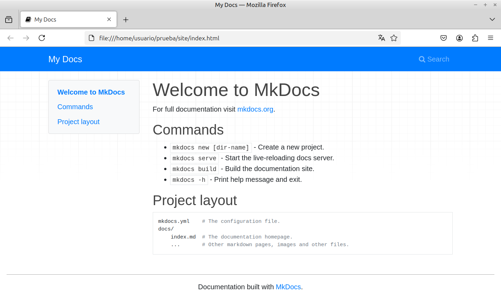
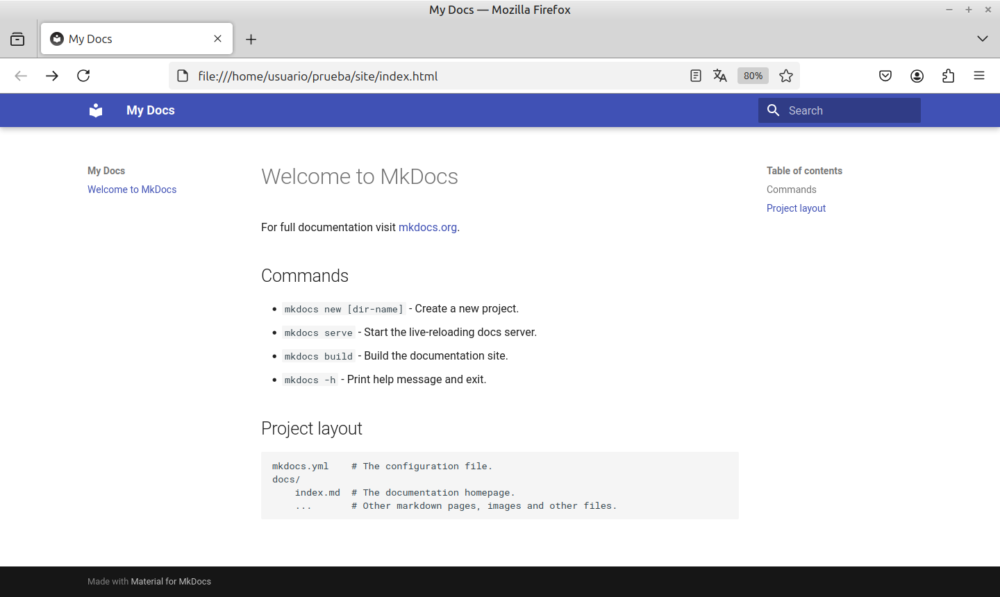

Creando un cuaderno¶
Una vez que tenemos el editor de texto y Material for MkDocs, podmos empezar a crear nuestro futuro sitio web de documentación. Cada cuaderno será un proyecto aparte, y cada capítulo del cuaderno, un archivo de texto.
El primer paso de cada proyecto es crear un directorio para alojar los archivos de trabajo. Abrimos el Terminal de comandos del sistema operativo (en mi caso Linux) y nos situamos en ese nuevo directorio:
$ cd miProyecto
Vamos a crear una estructura básica de proyecto. Ejecutamos el comando:
$ mkdocs new .
lo que indica a MkDocs que cree un nuevo proyecto en el directorio actual, representado por un punto al final del comando. Esto crea la siguiente estructura de carpetas y archivos:
.
├─ docs/
│ └─ index.md
└─ mkdocs.yml
Siendo:
-
El archivo
mkdocs.ymles un archivo de texto con la configuración del proyecto. Debe estar siempre presente en el directorio raíz del proyecto.Los archivos
.ymlson textos que siguen el formato YAML (no son archivos markdown). Podemos ver sus especificaciones en https://yaml.org -
La carpeta
docscontiene los documentos en formato markdown, siendo archivos de texto con sufijo.md. En principio tendremos un único documento, que típicamente se llamaráindex.md. A medida que queramos añadir capítulos a nuestro cuaderno, crearemos nuevos archivos.md
MkDocs considera como archivos markdown aquellos de texto que tengan un nombre con el sufijo ".md", ".markdown", ".mdown", ".mkdn", ".mkd" o ".md"
Formato Yaml¶
La configuración del proyecto se guarda en mkdocs.yml. En líneas generales, contiene una colección de parejas clave:valor, cada una de ellas en línea aparte. Se admiten líneas en blanco, que serán puramente decorativas:
site_name: Mi proyecto de documentacion
site_url: https://midominio.org/miproyecto
docs_dir: docs
En este ejemplo, especificamos el nombre del proyecto, la URL definitiva, y la carpeta de documentos, que por defecto, si no indicamos nada, será "docs". La configuración del proyecto se puede ajustar introduciendo los parámetros necesarios.
Cada variable puede ser de diferente tipo, que será deducido automáticamente. Por ejemplo:
-
un texto. Las comillas son opcionales, y pueden usarse apóstrofos en su lugar:
nombre: "Luis Gutierrez" -
un número:
edad: 58 -
un valor true o false
activado: true -
una lista. Los elementos se escriben en líneas aparte, precedidos por un guión
participes: - Luis - Ana - Juan -
una colección de elementos clave:valor
opciones: idioma: es avisos: true
Los valores de una colección pueden ser a su vez otras colecciones:
opciones:
idioma:
- es
- fr
- en
avisos: true
El carácter # da inicio a lo que será considerado como comentarios e ignorado. Se toma como tal todo el texto desde # hasta el fin de línea
#-------------------------
# opciones del proceso
#-------------------------
opciones:
idioma: es
avisos: true
Conversión a formato web¶
Tras crear la estructura básica del proyecto, tenemos un archivo index.md con un texto de pruebas. Vamos a generar un sitio web con ese contenido. El resultado final consistirá en uno o varios archivos de texto en formato HTML, el estándar web, que subiremos al servidor donde se va a alojar nuestro sitio.
Nos situamos en la carpeta principal del proyecto, allí donde se encuentra el archivo mkdocs.yml:
$ cd miproyecto
Ejecutar el comando:
$ mkdocs build
Esto genera los archivos html y los deja en la carpeta site, dentro de la carpeta de proyecto. El documento principal es index.html. Haciendo doble clic sobre el mismo, se visualizará en un navegador web:

Formato markdown¶
Una vez visto el aspecto que tiene nuestra página web de pruebas, vamos a examinar su aspecto en formato markdown. Abrimos con un editor de textos el archivo docs/index.md:
# Welcome to MkDocs
For full documentation visit [mkdocs.org](https://www.mkdocs.org).
## Commands
* `mkdocs new [dir-name]` - Create a new project.
* `mkdocs serve` - Start the live-reloading docs server.
* `mkdocs build` - Build the documentation site.
* `mkdocs -h` - Print help message and exit.
## Project layout
mkdocs.yml # The configuration file.
docs/
index.md # The documentation homepage.
... # Other markdown pages, images and other files.
- los párrafos se separan con una línea en blanco
-
los párrafos de título de página van precedidos por un carácter
#, que desaparecerá al convertir a html:# Welcome to MkDocs -
los párrafos de encabezado de un apartado van precedidos por varios caracteres
### Commands -
los enlaces se indican en formato
[texto a mostrar](URL) -
las entradas de una lista van precedidas por un guión o un asterisco
-
El texto a mostrar "tal cual" se sangra añadiendo cuatro espacios por la izquierda
El proceso de conversión añade la presentación, índices, cabeceras, colores, tipo de letra, etcétera.
Formato HTML¶
El formato de las páginas web es html, algo más farragoso de leer que markdown. Examinemos con un editor de textos el archivo generado, site/index.html
<!DOCTYPE html>
<html lang="en">
<head>
<meta charset="utf-8">
<meta http-equiv="X-UA-Compatible" content="IE=edge">
<meta name="viewport" content="width=device-width, initial-scale=1.0">
<meta name="description" content="None">
<link rel="shortcut icon" href="img/favicon.ico">
<title>My Docs</title>
<link href="css/bootstrap.min.css" rel="stylesheet">
<link href="css/font-awesome.min.css" rel="stylesheet">
<link href="css/base.css" rel="stylesheet">
<link rel="stylesheet" href="https://cdnjs.cloudflare.com/ajax/libs/highlight.js/11.8.0/styles/github.min.css">
<script src="https://cdnjs.cloudflare.com/ajax/libs/highlight.js/11.8.0/highlight.min.js"></script>
<script>hljs.highlightAll();</script>
</head>
<body class="homepage">
<div class="navbar fixed-top navbar-expand-lg navbar-dark bg-primary">
<div class="container">
<a class="navbar-brand" href=".">My Docs</a>
<!-- Expanded navigation -->
<div id="navbar-collapse" class="navbar-collapse collapse">
<ul class="nav navbar-nav ml-auto">
<li class="nav-item">
<a href="#" class="nav-link" data-toggle="modal" data-target="#mkdocs_search_modal">
<i class="fa fa-search"></i> Search
</a>
</li>
</ul>
</div>
</div>
</div>
<div class="container">
<div class="row">
<div class="col-md-3"><div class="navbar-light navbar-expand-md bs-sidebar hidden-print affix" role="complementary">
<div class="navbar-header">
<button type="button" class="navbar-toggler collapsed" data-toggle="collapse" data-target="#toc-collapse" title="Table of Contents">
<span class="fa fa-angle-down"></span>
</button>
</div>
<div id="toc-collapse" class="navbar-collapse collapse card bg-light">
<ul class="nav flex-column">
<li class="nav-item" data-level="1"><a href="#welcome-to-mkdocs" class="nav-link">Welcome to MkDocs</a>
<ul class="nav flex-column">
<li class="nav-item" data-level="2"><a href="#commands" class="nav-link">Commands</a>
<ul class="nav flex-column">
</ul>
</li>
<li class="nav-item" data-level="2"><a href="#project-layout" class="nav-link">Project layout</a>
<ul class="nav flex-column">
</ul>
</li>
</ul>
</li>
</ul>
</div>
</div></div>
<div class="col-md-9" role="main">
<h1 id="welcome-to-mkdocs">Welcome to MkDocs</h1>
<p>For full documentation visit <a href="https://www.mkdocs.org">mkdocs.org</a>.</p>
<h2 id="commands">Commands</h2>
<ul>
<li><code>mkdocs new [dir-name]</code> - Create a new project.</li>
<li><code>mkdocs serve</code> - Start the live-reloading docs server.</li>
<li><code>mkdocs build</code> - Build the documentation site.</li>
<li><code>mkdocs -h</code> - Print help message and exit.</li>
</ul>
<h2 id="project-layout">Project layout</h2>
<pre><code>mkdocs.yml # The configuration file.
docs/
index.md # The documentation homepage.
... # Other markdown pages, images and other files.
</code></pre></div>
</div>
</div>
<footer class="col-md-12">
<hr>
<p>Documentation built with <a href="https://www.mkdocs.org/">MkDocs</a>.</p>
</footer>
<script src="js/jquery-3.6.0.min.js"></script>
<script src="js/bootstrap.min.js"></script>
<script>
var base_url = ".",
shortcuts = {"help": 191, "next": 78, "previous": 80, "search": 83};
</script>
<script src="js/base.js"></script>
<script src="search/main.js"></script>
<div class="modal" id="mkdocs_search_modal" tabindex="-1" role="dialog" aria-labelledby="searchModalLabel" aria-hidden="true">
<div class="modal-dialog modal-lg">
<div class="modal-content">
<div class="modal-header">
<h4 class="modal-title" id="searchModalLabel">Search</h4>
<button type="button" class="close" data-dismiss="modal"><span aria-hidden="true">×</span><span class="sr-only">Close</span></button>
</div>
<div class="modal-body">
<p>From here you can search these documents. Enter your search terms below.</p>
<form>
<div class="form-group">
<input type="search" class="form-control" placeholder="Search..." id="mkdocs-search-query" title="Type search term here">
</div>
</form>
<div id="mkdocs-search-results" data-no-results-text="No results found"></div>
</div>
<div class="modal-footer">
</div>
</div>
</div>
</div><div class="modal" id="mkdocs_keyboard_modal" tabindex="-1" role="dialog" aria-labelledby="keyboardModalLabel" aria-hidden="true">
<div class="modal-dialog">
<div class="modal-content">
<div class="modal-header">
<h4 class="modal-title" id="keyboardModalLabel">Keyboard Shortcuts</h4>
<button type="button" class="close" data-dismiss="modal"><span aria-hidden="true">×</span><span class="sr-only">Close</span></button>
</div>
<div class="modal-body">
<table class="table">
<thead>
<tr>
<th style="width: 20%;">Keys</th>
<th>Action</th>
</tr>
</thead>
<tbody>
<tr>
<td class="help shortcut"><kbd>?</kbd></td>
<td>Open this help</td>
</tr>
<tr>
<td class="next shortcut"><kbd>n</kbd></td>
<td>Next page</td>
</tr>
<tr>
<td class="prev shortcut"><kbd>p</kbd></td>
<td>Previous page</td>
</tr>
<tr>
<td class="search shortcut"><kbd>s</kbd></td>
<td>Search</td>
</tr>
</tbody>
</table>
</div>
<div class="modal-footer">
</div>
</div>
</div>
</div>
</body>
</html>
<!--
MkDocs version : 1.5.3
Build Date UTC : 2024-11-19 15:36:32.123662+00:00
-->
Las páginas generadas por MkDocs son archivos de texto con decenas de marcas, en formato HTML, que es el estándar web por excelencia. Las marcas HTML se denominan etiquetas, y consisten en indicaciones delimitadas entre dos ángulos < >. Por ejemplo:
<p>Texto del párrafo 1.</p>
<p>Texto del <br>párrafo 2.</p>
Muestra en el navegador web:
Texto del párrafo 1.
Texto del
párrafo 2.
La etiqueta <p> indica comienzo de párrafo, y la etiqueta </p> es la de fin de párrafo. El navegador mostrará los párrafos separados por una línea en blanco. la etiqueta <br> fuerza un salto de línea (break).
Para redactar nuestros cuadernos podríamos usar directamente el formato HTML. Basta con sustituir la extensión .md por .html en el nombre del archivo, e insertar a mano las etiquetas < >. Pero markdown fue creado precisamente para facilitarnos el trabajo y hacer más legible la edición de archivos. En resumen, podemos considerar HTML como un formato para publicar contenidos, y markdown como un formato para escribirlos.
Versión de Markdown¶
Hemos de tener en cuenta que el formato markdown fue creado en 2004 y, desde entonces, apenas ha evolucionado. Esto ha dado pie a que surjan diferentes versiones con elementos añadidos. MkDocs usa la versión Python Markdown, basada en el formato original con algunas diferencias.
Material for MkDocs aporta características añadidas usando un software llamado Python Markdown Extensions.
Configuracion¶
MkDocs genera las páginas web con una presentación por defecto, pero permite utilizar otros formatos. Material for MkDocs es un software que extiende las capacidades originales de MkDocs. Para utilizarlo, abrimos con un editor el archivo mkdocs.yml y modificamos su contenido:
site_name: My Docs
site_url: https://midominio.org/miproyecto
theme:
name: material
La entrada site_url será necesaria cuando subamos el proyecto al servidor, y es importante por varias razones. Por defecto, al hacer las conversiones y generar el sitio web, MkDocs asume que se va a alojar en el directorio raíz del dominio. Si por ejemplo publicamos en GitHub pages, no será el caso, pero algunos de los complementos necesitan tener configurada esta opción.
La opción site_name es el título que aparecerá en la barra de cabecera.
El apartado theme incluye varias opciones de configuración del tema utilizado. La primera de ellas es el nombre del tema, que en el caso de Material for MkDocs es:
name: material
¡Importante! De acuerdo al formato YAML, las listas de opciones dentro de un apartado han de sangrarse con el mismo número de espacios en blanco por la izquierda. No se permiten caracteres de tabulación.
Para ver el efecto del nuevo tema aplicado, repetimos la conversión a html con el comando:
$ mkdocs build
Y ahora, el archivo index.html tiene otro aspecto en el navegador:

Carpetas¶
Las carpetas por defecto son docs, para los documentos markdown, y site para el sitio web generado. Podemos establecer otros nombres en el archivo mkdocs.yml:
site_name: Mi proyecto de documentacion
site_url: https://midominio.org/miproyecto
theme:
name: material
docs_dir: docs
site_dir: site
Las carpetas se especifican asumiendo que "cuelgan" del directorio raíz de proyecto. Por ejemplo, si queremos guardar los archivos markdown en una subcarpeta:
docs_dir: docs/ficheros_markdown
Previsualización¶
Sin llegar a crear el sitio web, podemos hacer una conversión "al vuelo" y visualizar los resultados en la ventana del navegador web. Para ello, tenemos que poner en marcha MkDocs en modo "servidor". Nos situamos en la carpeta principal del proyecto:
$ cd miproyecto
y ejecutamos:
$ mkdocs serve
Esto muestra algunos mensajes del proceso de conversión, y si todo va bien, indica que la página web resultante será visible en una dirección web:
INFO - Building documentation...
INFO - Cleaning site directory
INFO - Documentation built in 0.41 seconds
INFO - [10:28:25] Watching paths for changes: 'docs', 'mkdocs.yml'
INFO - [10:28:25] Serving on
http://127.0.0.1:8000/miproyecto/
El servidor se mantiene activo en segundo plano, y cada vez que guardemos los cambios de un archivo, se regenerará la página. Podemos tener abiertas las dos ventanas, el editor y el navegador web, y los cambios en una se reflejarán en la otra.
El servidor MkDocs se detiene seleccionando la ventana del Terminal de comandos y pulsando Ctrl+C (o la tecla establecida en nuestro sistema operativo para interrumpir la ejecución de comandos).